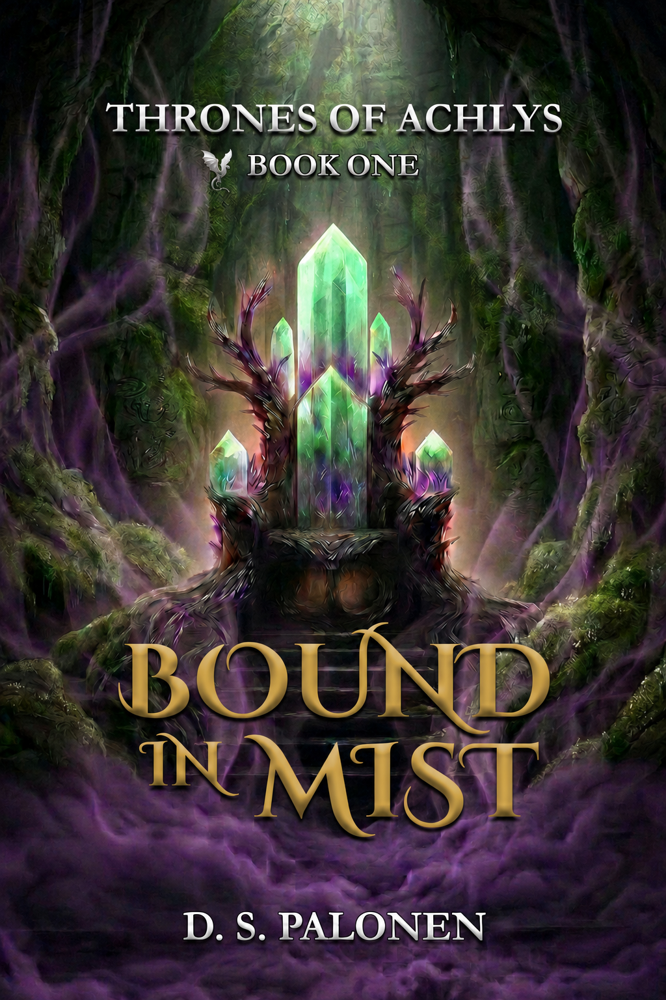
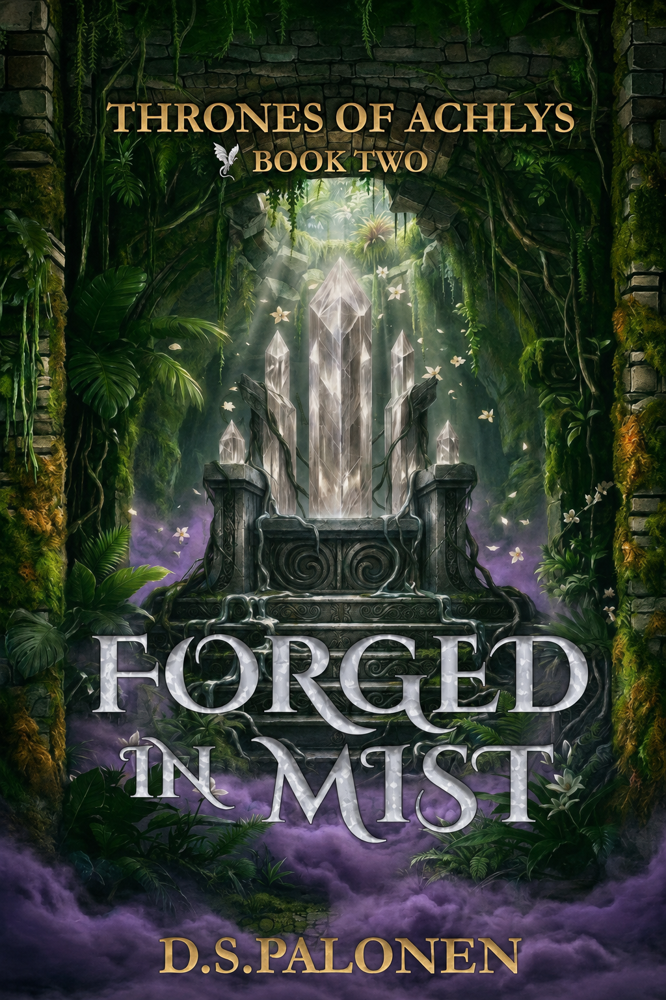

Bound in Mist
Thrones of Achlys: Book One
Available on Amazon and Kindle Unlimited
Read Bound in MistA monthly invitation
Monthly Author Spotlight
Each month, Ravenloft opens its doors to an independent author from the BookTok and AuthorTok community. This month, we welcome D.S. Palonen, author of the Thrones of Achlys series.
“A quiet invitation into a world shaped by atmosphere, memory, and the lingering pull of fate.”

Thrones of Achlys: Book One
Available on Amazon and Kindle Unlimited
Read Bound in Mist
Thrones of Achlys: Book Two
Available on Amazon and Kindle Unlimited
Read Forged in MistD. S. Palonen writes adventure-forward romantasy featuring epic fantasy, fast-paced adventure, slow-burn romance, and unexpected science fiction.
Her path to fiction has been anything but ordinary. After serving as a jet engine mechanic in the U.S. Air Force, she spent years as a technical writer and editor, creating technical manuals while developing the editing, design, and Photoshop skills she now brings to publishing her own books. Along the way, military life and her husband's career led her through a collection of dream jobs, from assistant manager of a bookstore and librarian to plant specialist in a garden center, each one fueled by a lifelong love of books, learning, and growing things.
Born in Reno, Nevada, D. S. spent much of her childhood aboard a sailboat in the U.S. Virgin Islands before living in nine different states and spending four years in England, where she happily developed a lifelong addiction to tea. Now retired and settled in Tennessee near family, she's finally devoting herself full-time to the stories she's been imagining for years.
When she's not writing, she's spoiling her grandchildren, exploring new ideas over a cup of strong black tea, and proving that the best adventures happen when magic and science fall in love.